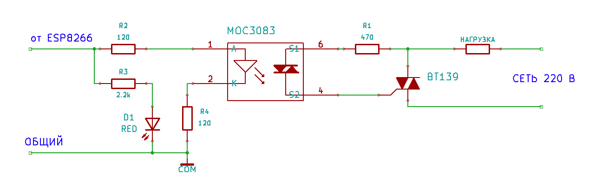
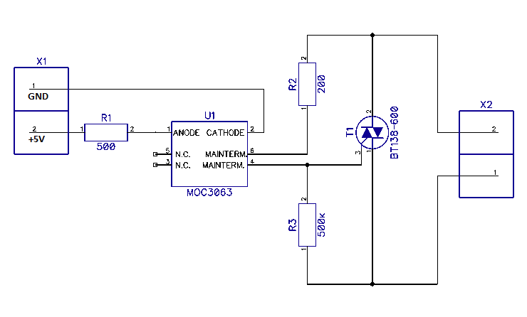
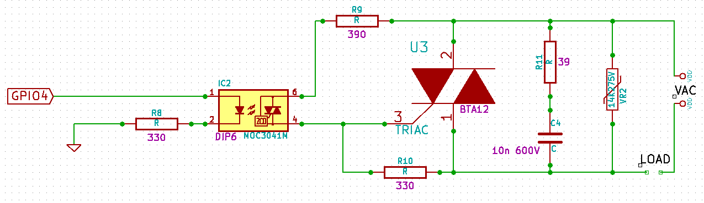

Подводя итог, привожу исправленную схему.
Резистор R1 желательно поставить проволочный или хотя бы металлопленочный мощностью 1 Вт, что-то вроде МЛТ-1. В нормальном режиме при указанном номинале мощность на нем совершенно мизерная, однако иногда (долго объяснять почему) оптосимистор может открываться в середине сетевого полупериода, так что резистор должен уметь выдерживать такие "удары" не сгорая и не деградируя.
Резистор последовательно со светодиодом оптосимистора разделен на два резистора по 120 Ом. При таком включении короткие наносекундные помехи, гуляющие по сети и проникающие сквозь проходную емкость оптосимистора, не будут оказывать влияния на ESP8266. То есть, сбоить будет меньше. При указанных номиналах через светодиод оптрона будет идти ток типично около 8 мА, и не менее 5 мА во всем диапазоне температур и вариаций параметров и напряжения питания.
Для индикации добавлен опциональный красный светодиод D1. Ток через него идет маленький, светится будет неярко, но вполне достаточно.


Ваша схема ничем не лучше.
Во-первых, ваша схема предназначена для работы от 5В источника сигнала. А мы сдесь вроде как ESP8266 обсуждаем, у которого номинальное выходное напряжение 3.3В. В вашей схеме R1 надо уменьшить с 500 Ом до 220...330 Ом.
Во-вторых, номинал R2 слишком мал. Я уже писал, что в даташите на оптрон приводится рекомендуемое значение 360 Ом, и объяснял, откуда такое значение взялось. Ставить меньше 360 Ом не советую. С низкоомным резистором до поры до времени работать будет, но при этом нет гарантий, что оптрон не выгорит. Дело в том, что при подаче питания на схему оптосимистор может открыться по dV/dt. Какое в этот момент будет сетевое напряжение, заранее неизвестно, вполне может оказаться полное амплитудное, 340 В. Через оптосимистор при этом пойдет ток 1.7 А, а у него предельно допустимое всего 1 А. Подача напряжения на схему как правило событие нечастое, возникает оно разве что после пропадания сетевого напряжения, поэтому полтора года для пары устройств - это не срок. Может, потом выгорит, а может, так и будут работать. Охота вам рисковать на пустом месте - так ради бога, кто ж запретит.
В-третьих, резистор R3 с номиналом 500 кОм - абсолютно не имеет смысла. Что он есть, что его нет, никакой разницы совершенно. Дeло в том, что внутри симистора уже есть резистор номиналом примерно 5 кОм, поэтому внешний резистор 500 кОм - как мертвому припарки.
Ну и, наконец, то, что в схеме везде стоят "круглые" номиналы - это явный признак, что схему рисовал какой-то малограмотный радиолюбитель. Поскольку стандартного номинала 500 Ом или 500 кОм просто не существует, а номинал 200 Ом - сравнительно редкий.
